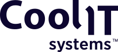

Map blocked work
Review IT and internal-tool backlog, then pick work linked to recruiting, service, web, or product operations.

by ElinextProposal brief for Ian Graham
CoolIT is scaling direct liquid cooling for AI and HPC data centers. IT work cannot wait while permanent hiring catches up. The pressure touches internal systems, web, service workflows, and delivery support.
Saw the contract Technical Talent Acquisition role. It points to high-volume technical hiring and a need for bridge capacity now.
CoolIT is adding recruiting power because demand is moving faster than the team. The bottleneck is likely not only hiring. It is the IT, DevOps, QA, and internal-tool work that waits while managers search for people. If that gap stays open, projects around CDUs, coldplates, service, and global operations can slow down.
A dedicated bridge squad under Ian's PM or IT lead.
Review IT and internal-tool backlog, then pick work linked to recruiting, service, web, or product operations.
Add QA automation, release checks, and DevOps support so small changes ship without draining senior staff.
Deliver weekly updates for hiring workflows, reporting, service tools, or public web performance cleanup work.
Document code, tests, and runbooks so new permanent hires can take ownership without later rework.
Elinext is a full-cycle software development company. We have worked since 1997. We have about 700 in-house specialists and no freelancers. We support web, backend, mobile, QA, DevOps, AI/ML, and product teams. For CoolIT, the fit is a steady dedicated team. It is backed by ISO 9001 quality practice and ISO 27001 security practice. Our named customers include Siemens, Broadcom, and Volkswagen. We also work with TRUMPF and TUI. That mix fits a bridge squad for Ian's team. We can start small, document well, and leave clean ownership behind.
Elinext built a hiring workflow system with candidate, vacancy, and admin modules for active hiring periods.
Read the case study
Elinext built a custom web app for a Canadian industrial-equipment SaaS, using Java, Spring, Angular, and MariaDB.
Read the case study